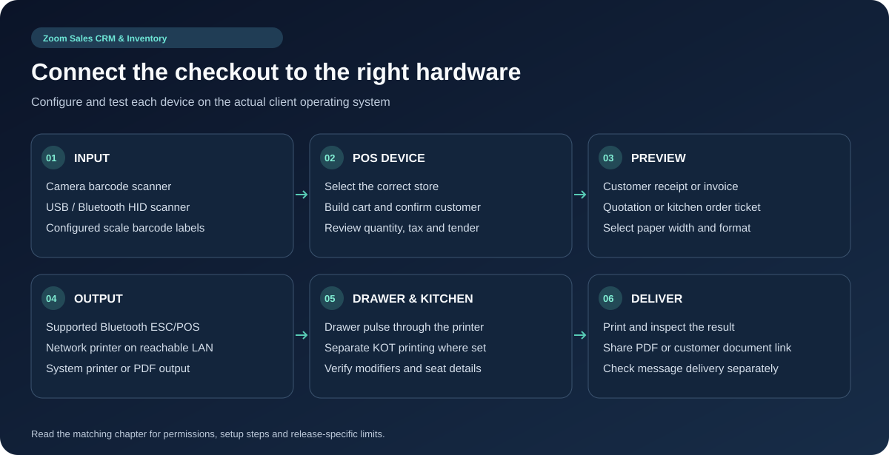

Every feature.
Explained in full.
A complete, plain-language guide to the dashboard, the mobile & desktop app, the online storefront, every industry-specific workflow, the automatic browser-based installer, the Cross-Platform Client Compilation & Customization Guide, the complete WhatsApp API & multi-channel notification guide (WhatsApp, SMS, Email, Webhooks), and support — what each feature does, how to use it, and what it gives your business.
All sections shown.
About This Guide
This guide explains, in full detail, everything the system does and how it works from a user’s point of view — what each feature is for, how to use it, and what it gives your business. It covers the web-based management dashboard, the mobile/desktop app, the online storefront, every industry-specific workflow the platform supports, how to install and deploy the platform, and how to get help.
1. What the System Is
Zoom Sales CRM & Inventory is a complete, cloud-based business management platform that brings together point of sale (POS), inventory management, customer relationship management (CRM), invoicing, online selling, and industry-specific workflows into one connected system.
It is built as a multi-business (multi-tenant) platform: many independent businesses can each run their own store on the same platform, with their own data, staff, branches, branding, and settings — fully separated from every other business using the system.
Each business can operate through two connected surfaces:
- A web-based management dashboard — used from any browser for administration, reporting, configuration, and back-office work.
- A mobile and desktop app — used on the shop floor, at the counter, in the kitchen, or on the move, for day-to-day operations such as ringing up sales, managing tables, or checking on stock.
Both surfaces talk to the same central system in real time, so a sale made on a phone at the counter is reflected instantly in the web dashboard, and a product added from the dashboard is instantly available in the app.
2. How the System Works — The Big Picture

2.1 Businesses, Branches and Staff
Every business that signs up becomes a tenant — an independent company account with its own products, customers, sales, staff, and settings, completely isolated from other businesses on the platform.
Inside a business:
- A branch (store) represents a physical or logical location — a shop, a warehouse, a kiosk, a restaurant outlet, and so on. A business can have one branch or many.
- The product catalog and customer list are normally shared across the whole business, so every branch sells from the same master catalog and recognizes the same customers.
- Stock levels, sales, and day-to-day operational records are tracked per branch, so each location has its own accurate view of what it has in hand and what it has sold.
- Staff members are invited into the business and assigned to one or more branches, with a role that determines exactly what they can see and do.
Before recording stock or making a sale, a staff member selects (or is assigned to) the active branch they are working from, so every transaction is attributed to the correct location.
2.2 The Two Interfaces, Working Together
The web dashboard is where a business owner or manager configures the system: setting up products, staff, taxes, payment methods, receipt designs, reports, the online store, and more. It is accessed by signing in through a browser.
The mobile/desktop app is the day-to-day operating tool. It is what a cashier, waiter, pharmacist, stylist, or technician actually touches during a shift. It mirrors the same data as the dashboard — products, customers, prices, permissions — and adds point-of-sale screens, barcode scanning, receipt printing, and hardware integrations that a phone, tablet, or POS terminal needs.
Because both surfaces are connected to the same central data, any change made in one place (a new product, a price update, a new staff permission) becomes available to the other side as soon as it refreshes.
2.3 Server-Driven Screens and Modules
Rather than every screen being permanently fixed inside the app, the app can also receive screen layouts, menus, feature availability, and translated text directly from the server each time it starts up or refreshes. This is what makes it possible for the platform to:
- Turn business-type-specific workflows (restaurant, pharmacy, salon, repair, etc.) on or off for a given business without a new app release.
- Show or hide menu items instantly based on what a business has enabled and what a staff member is permitted to see.
- Deliver new layouts built from existing screen building-blocks (lists, forms, buttons, catalogs, carts) without requiring every business to update their app immediately.
In practice, this means: when a business activates an industry module (say, Restaurant or Pharmacy), the relevant menus, dashboards, and screens simply appear in the app and dashboard the next time they load — no separate installation is needed on the device.
2.4 Real-Time Data Plus Offline Resilience
The system is designed to work primarily online, keeping every device in sync in real time. However, the mobile app also keeps a local copy of essential data (products, customers, recent records) on the device itself, so that operations such as ringing up a sale can continue even during a temporary loss of internet connection. Once the connection returns, everything recorded offline is automatically sent to the server and reconciled (see Section 13, Offline Mode).
2.5 Roles at a Glance
| Role | What they manage |
|---|---|
| Platform Administrator | Oversees the entire platform: onboarding businesses, managing available modules, plans, platform-wide branding, and platform settings. Relevant mainly to the platform operator, not individual businesses. |
| Business Owner | Full control of their own business: branches, staff, catalog, sales, finance, storefront, and settings. |
| Staff / Employee | Operates within the permissions granted to them — for example, a cashier can process sales but may not be able to edit prices or view financial reports, depending on how their role is configured. |
3. Getting Started — First-Time Setup Workflow
A new business typically becomes fully operational by following this sequence:
- Create the business account and verify the owner’s identity, then choose the business’s operating mode (retail, restaurant, pharmacy, salon, repair, etc.).
- Configure branch details — name, address, tax identifiers, receipt/invoice numbering — along with staff permissions, tax rules, accepted payment methods, and receipt/invoice templates.
- Build the product catalog — add products (or import them in bulk) and enter opening stock quantities; set up the printers and notification preferences that will be used day to day.
- Open the register and run a test sale — process a sample transaction, preview the resulting receipt or invoice, and confirm that stock levels and payment records update correctly.
- Turn on any additional surfaces the business plans to use — the online storefront, automated reminders, and customer-facing order tracking — and verify each one before relying on it for real customers.
Every screen and action in the system respects the permissions assigned to the signed-in staff member, so a menu being visible does not by itself mean every action within it is allowed — access is always governed by the assigned role.
4. Business & Platform Administration
These are the controls a business (or the platform operator, where noted) uses to configure how the whole system looks, behaves, and communicates.
4.1 Business Branding and Appearance
Businesses can customize the look of their own workspace and customer-facing documents: logo, favicon, sign-in screen banner, primary and sidebar colors, and coordinated color palettes across the dashboard, app, and public pages. This lets every business present a consistent, branded experience to their own staff and customers rather than a generic, one-size-fits-all interface.
4.2 Website / Landing Content Management
For platform-level marketing pages, an in-built content editor lets an administrator manage every section of the public-facing website without touching any code — hero banners and call-to-action buttons, feature highlights, hardware showcases, industry solution highlights, statistics, “about” content, testimonials, pricing tables, contact details, downloads, and FAQs. Sections can be reordered, shown or hidden, and edited directly, with changes reflected immediately on the live page.
4.3 Public Pages and Navigation Menus
Additional standalone pages (such as help articles, policies, or campaign pages) can be created, edited, and linked into custom navigation menus, with support for internal page links, anchor links, and external URLs, plus control over ordering, nesting (sub-menus), and whether a link opens in the same or a new tab.
4.4 Contact and Inquiry Management
Visitors and prospective customers can submit inquiries through a configurable contact form. The fields on that form (name, email, custom questions, etc.) can be fully customized. Incoming inquiries can be searched, marked as read or replied, and managed in bulk, giving a business a simple built-in lead-capture and support-intake tool.
4.5 Communication Infrastructure
The platform provides shared infrastructure for outbound communication that individual businesses draw on: - Email (SMTP) setup with a test-send function to confirm delivery. - Social sign-in configuration, letting users authenticate with a supported external identity provider instead of a password. - Push notifications (via Firebase) with configuration for order and invoice alert channels, notification sounds, and repeat behavior, plus a test-delivery function.
4.6 Multi-Language Support
The interface can be fully translated. Administrators can enable specific languages, edit translation strings directly, detect newly added or removed text keys, and automatically flag any text still missing an English (fallback) translation. New languages can be added from scratch, making the system usable for teams and customers who speak different languages.
4.7 Backups and Activity Auditing
On demand, the system can generate a downloadable snapshot of a business’s data (delivered as a structured export package) that can be reviewed or archived. A separate audit view lets administrators filter and review a record of system activity, supporting accountability and troubleshooting.
5. User Accounts, Access and Multi-Branch Management
5.1 Registration, Sign-In and Recovery
New businesses can register directly, including automatic checks that their chosen subdomain/name is available. Users sign in with a password, complete email-based one-time-password (OTP) verification where required, reset a forgotten password, or sign in via a supported social login. Staff invited to a business can accept their invitation and set up their own account access. Recovery flows are self-service, reducing the need for manual account resets.
5.2 Staff, Roles, Permissions and Commissions
A business can invite staff by email, assign them a role, and control their active/inactive status or remove them entirely. Roles are built from granular permission presets — a business decides, feature by feature and action by action, exactly what a role is allowed to do (for example, “can process sales” but “cannot edit prices,” or “can view reports” but “cannot delete records”). Individual users can also have permission overrides on top of their role. Where relevant, staff can be assigned commission rates so that sales attributed to them automatically feed into commission reporting.
5.3 Session and Device Oversight
Administrators can view active devices signed in to a staff account and revoke a specific device’s session — useful when an employee leaves, a phone is lost, or a session needs to be forced out for security reasons. An authorized “switch to user” (impersonation) capability lets an administrator temporarily view the system as a specific staff member would, to reproduce and diagnose an issue they’re reporting, then exit back to their own session.
5.4 Multi-Store (Branch) Management
Businesses with more than one location can create additional branches, each with its own code, address, tax identifiers, and its own invoice/receipt numbering prefixes. A “primary branch” safeguard prevents accidental removal of a business’s main location. Staff can be assigned to one or several branches, and a store switcher lets a staff member move between branches they’re authorized for — important because stock and sales are always recorded against the currently active branch.
5.5 Dashboard Overview
The main dashboard summarizes what matters at a glance: sales, order, and customer metrics; charts showing trends; shortcuts to overdue receivables; and adjustable date ranges. From here, a manager can also choose which point-of-sale layout or dashboard layout best suits how their team works, then click straight through into the underlying records behind any metric shown.
6. Product Catalog and Inventory Management
6.1 Products and Identifiers
The core of the system is a shared product catalog. Products can be created and edited with SKUs, item codes, and barcodes (which can be auto-generated or scanned in from an existing label), pricing, images, and links to categories, brands, and units of measure. Every product created here becomes instantly searchable and sellable at the point of sale, on invoices, and (if published) on the online storefront.
6.2 Variants, Modifiers and Customization Options
Products that come in multiple options — sizes, colors, spice levels, add-ons — can have variant rows and modifier selections configured, each with its own price adjustment. This lets a single “product” represent many sellable combinations (for example, a burger with a size, a spice-level, and optional extra toppings), with the correct combined price calculated automatically at checkout.
6.3 Bulk Product Import
For businesses migrating from another system or setting up a large catalog at once, a downloadable spreadsheet template (with the option of sample demo data) can be filled in and re-uploaded. The system processes the file, reports any errors row by row, and adds the successfully validated products directly into the catalog — dramatically cutting down manual data entry.
6.4 Stock Adjustments and Per-Branch Quantities
Stock is tracked independently per branch. Adjustments — for damage, recounts, transfers, or corrections — can be recorded against a specific branch, with the running balance for that branch updated immediately and reflected consistently across every screen that shows stock.
6.5 Product Image Management
Store owners can upload high-resolution product photography and gallery images directly from the catalog manager. Images are automatically optimized and served to the POS touch screen and digital catalog.
6.6 Categories, Brands, Units and Suppliers
Independent, reusable reference lists — categories, brands, units of measure, and suppliers — keep the catalog organized and consistent. These are referenced from products and purchasing records, so the same category or supplier name is used consistently across the whole system rather than being re-typed each time.
7. Selling — Point of Sale, Invoices and Quotations
7.1 Retail Checkout (Point of Sale)
The core selling screen lets a cashier browse products by grid or category, search or scan items, adjust quantities, remove items, apply quick discounts, add custom “keypad” items not in the catalog (with authorization for price overrides where allowed), select or quickly create a customer, review the order total, and check out. This single screen is designed to combine catalog lookup and payment collection into one smooth cashier workflow.
7.2 Weighing-Scale Barcode Support
For businesses selling items by weight (produce, deli items, bulk goods), the system can be configured to recognize a specific barcode format used by weighing scales, decoding the embedded weight and/or price directly from the scanned barcode and applying the correct quantity automatically — avoiding manual re-typing of weights.
7.3 Held Orders, Split Payments and Register Control
An unfinished sale can be held and resumed later — useful when a customer steps away or an order needs to wait. At checkout, a payment can be split across multiple methods (for example, part cash, part card). Where a cash register workflow is enabled, a register must be opened before sales can be finalized, ensuring every transaction is tied to an active, accountable shift.
7.4 Sales and Invoice Management
Every completed transaction becomes a searchable sales record, with detail views, PDF generation, due-payment filters, custom date-range filtering, and the ability to email or otherwise deliver the invoice to the customer. Authorized actions (such as completing or cancelling a sale) are available directly from the record.
7.5 Quotations
Quotes can be created for prospective sales, complete with customer details, line items, default terms, and a PDF for sharing. A quote’s status can be tracked and updated as it moves through the sales process, and — once the customer accepts — it can be converted directly into a sale or opened straight into the point-of-sale screen for checkout, carrying over all the quoted items and pricing.
7.6 Invoice and Quotation Design (Template Studio)
Businesses can fully customize the appearance of their customer-facing documents: colors, logo placement, alignment, numbering prefixes, printed terms, bank or payment details shown on the document, and receipt layout, with a live preview using real line items before saving.
7.7 Unified Document Delivery
Rather than juggling separate tools for different sending methods, one dispatch workflow lets a business preview a document (in thermal receipt or A4 page format), then choose how to deliver it — as a PDF, a shareable link, or directly via email, SMS, WhatsApp, or another configured channel — with batch sending supported when multiple documents need to go out at once.
7.8 Consignment Sales
For businesses that place stock with another party to sell on their behalf, the consignment workflow tracks the allocation of stock, the dispatch of goods, and later the reconciliation of what was sold versus what was returned. Once reconciled, the consignment can be finalized directly into an invoice or sale, closing the loop between goods handed out and revenue recognized.
8. Customers and Financial Management
8.1 Customer Profiles and Loyalty
Every customer record keeps contact details and full purchase history in one place. A built-in loyalty points system tracks and allows manual adjustment of a customer’s earned points, supporting simple reward programs.
8.2 Customer Credit and Settlement
Sales can be made on credit, tracked against a per-customer ledger. Payments received later against that balance are recorded against the correct outstanding sale, and the customer’s remaining balance updates automatically — giving a clear, always-current picture of who owes what.
8.3 Cash Register and Shift Reconciliation
A full cash-drawer workflow supports recording an opening balance (including a denomination breakdown), logging cash movements throughout a shift (such as petty cash in or out), and closing the register by counting the cash actually on hand. The system then produces a Z report comparing expected versus counted cash, helping identify and explain any discrepancy at the end of a shift.
8.4 Receivables and Automated Reminders
Outstanding customer balances are surfaced in a dedicated receivables view, filterable by due range, where a payment can be recorded on the spot or a reminder sent — either immediately or on a schedule — to nudge the customer toward settling their balance.
8.5 Vendor Bills and Payables
On the other side of the ledger, bills owed to suppliers can be recorded, edited, and settled in full or in part, giving businesses visibility into what they owe and what remains outstanding at any point.
8.6 Payment Methods and Fees
Businesses configure which payment methods they accept and in what order they’re offered at checkout, including bank account details, UPI information, and Pix keys/merchant settings for regions where those apply. Card fee handling can be configured for debit, credit, and installment payments so the correct surcharge or fee is calculated automatically.
8.7 Payment Method Ledger
A dedicated ledger view breaks down transaction history by payment channel (cash, card, bank transfer, etc.) and supports CSV export — useful for reconciling each payment method against bank or processor statements.
8.8 Tax Rules and Fiscal Documents
Tax rules can be configured per country, including default and active rate sets, sub-components of a combined tax, and automatic calculation at checkout. For regions with structured electronic-invoicing requirements, the system can prepare the relevant invoice data and QR codes in the required regional formats as part of the checkout and document workflow.
8.9 Reports, Commissions and Sales Targets
A full reporting suite covers sales summaries, detailed sales, profit and loss, payment-method breakdowns, till closing history, staff commissions, and aging analysis of outstanding balances — with flexible date presets and CSV/export options throughout. Sales targets can be set for a period and allocated across staff (evenly or by custom split), giving managers a simple way to track performance against goals.
9. Online Storefront
9.1 Published Catalogs
A business can hand-pick a subset of products (or select the entire catalog) and publish it as a shareable, public catalog link — a lightweight way to send customers a curated product list without setting up a full storefront. The link can be revoked at any time.
9.2 Full Storefront, Branding and Custom Domain
Beyond a simple published catalog, a full online store can be configured with its own banner and sign-in appearance, product categories, a navigation menu builder (supporting anchor links, custom pages, and ordering), and — where DNS is pointed correctly — a business’s own custom domain, giving the storefront a fully branded, professional web presence.
9.3 Customer Accounts, Addresses and Wishlist
Storefront visitors can register and sign in to their own account, manage saved delivery addresses, add products to a wishlist, see calculated cart totals, and review their past order history — encouraging repeat visits and faster future checkouts.
9.4 Ordering, Checkout and Order Tracking
Customers build a cart, choose delivery and payment details, complete any required verification step, and place (and pay for) their order. Every order receives a tracking link, giving the customer visibility into its status without needing to contact the business directly.
9.5 Coupons and Promotions
Discount coupons can be created with configurable limits and conditions, then validated automatically at checkout — accepting eligible carts and rejecting ineligible ones according to the rules set, and keeping a record of how each coupon has been used.
9.6 FAQs, Reviews and Storefront Inquiries
A business can maintain a public FAQ list, enable and moderate customer product reviews (with approve/reject/delete control), and receive general storefront inquiries — helping reduce repetitive customer questions and build social proof through visible feedback.
9.7 External Commerce Integrations
Orders originating from external sales channels can be normalized and pulled into the same order pipeline, and outbound events from the store can be pushed out to other connected systems — letting the storefront act as one connected node within a wider set of sales tools rather than an isolated silo.
10. Automation, Notifications and Personalization
10.1 Notification Feed and Alerts
A built-in notification center surfaces order and invoice alerts as they happen, with the ability to dismiss individual alerts or clear them all, and to customize the alert sound (including uploading a custom tone) and repeat behavior.
10.2 Scheduled and Automated Reminders
Beyond one-off alerts, the system supports scheduled follow-ups: automatic receivable reminders, customer reminders, and industry-specific reminders (such as an appointment or repair status update), respecting each business’s configured timezone and frequency preferences, with built-in duplicate-prevention so the same reminder isn’t sent twice.
10.3 Communication Channels
A business can connect its own communication accounts for outbound messaging — WhatsApp (through several supported connection options), SMS (through several supported providers), and email — along with custom webhook channels for advanced integrations, each with a test-send option before relying on it for real customer communication.
10.4 Interface Personalization
Both the dashboard and the app allow personalization of the working environment: menu visibility, order, and grouping; icons and labels; custom labels on forms; the position of the navigation dock (for example, left, right, top, or bottom on the app); theme colors; background surfaces; and page-transition animation style — letting each business (and, for local device preferences, each staff member) tailor the workspace to how they actually work.
10.5 Regional Settings — Language, Currency and Time
A business sets its default working language, can override or add custom phrases on top of the base translation, and configures currency symbol, decimal handling, symbol position, and any additional currencies it needs to display — ensuring receipts, invoices, and totals always appear in the correct local format.
10.6 Subscription and Billing Management
From within their own account, a business can view and choose their subscription plan, apply an activation code where one has been provided, and — where a payment provider is connected — complete an online plan purchase, with a downloadable and emailable invoice generated for their records.
10.7 API Keys and Sample-Data Cleanup
For businesses that want to connect their own external tools, scoped API keys can be issued, toggled on or off, and revoked when no longer needed. A separate one-time cleanup action removes sample/demo records that were used to explore the system, helping a business transition cleanly from evaluation to live use.
11. Industry-Specific Modules

Beyond general retail, the platform offers purpose-built workflows for specific types of businesses. Each module, once made available to a business, adds its own dedicated screens, dashboards, and terminology throughout the app and dashboard.
11.1 Restaurant — Floor, Table and Kitchen Management
- Floors and tables: Create a visual floor plan with tables, each showing live status (free, occupied, needs cleaning, etc.).
- Service types: Handle dine-in and takeaway orders differently, with seat selection for dine-in service.
- Order customization: Full support for variants, modifiers, and spice-level options, with authorized price overrides where needed.
- Kitchen dispatch: Orders sent from the table are pushed straight to the kitchen.
- Table management: Transfer an order between tables, and settle the bill with split payments where needed.
- Kitchen Display System (KDS): A dedicated kitchen screen shows incoming tickets, lets kitchen staff move an item through preparation, ready, and served stages, print a kitchen order ticket (KOT), cancel an item if needed, and see elapsed-time indicators so nothing sits forgotten.
- QR table ordering: Each table can carry a printed QR code or stand card that lets customers view the menu and place an order directly from their own phone, without a token-based login.
11.2 Pharmacy — Batches and Prescriptions
- Batch tracking: Products can be tracked at the batch level, each with its own barcode and expiry date, so stock is always attributable to a specific incoming batch.
- Expiry-aware stock: Adjustments and returns are recorded against the correct batch, keeping expiry visibility accurate.
- Prescription intake: A prescription (including an attached image or file) can be captured against a customer, then referenced during checkout.
- Prescription checkout: A dedicated checkout flow lets pharmacy staff dispense against a specific prescription and batch, or cancel the dispensing if needed, with the resulting sale and stock movement recorded automatically. (Note: this tracks the business’s own dispensing records — it does not itself constitute a clinical or regulatory certification.)
11.3 Salon — Bookings and Specialists
- Service catalog: Services are organized by category, each with its own price and duration.
- Specialist management: Stylists/specialists can be created and activated, and a booking can be assigned to a specific specialist.
- Availability and booking: The calendar shows day-by-day appointment availability, letting staff check open slots before confirming a new booking.
- Checkout: Once a service is delivered, the appointment status is updated and checkout is completed through the same billing engine as the rest of the system, so salon transactions appear alongside every other sale in reporting.
11.4 Repair Shop — Ticket Lifecycle Management
- Device intake: Devices are categorized with configurable defaults and a diagnostic checklist template per category.
- Ticket tracking: Each repair becomes a ticket with its own status (received, diagnosing, in progress, ready, completed, etc.), assignable to a specific technician.
- Diagnosis and cost: Technicians record diagnostic findings, add or remove parts used, and add labor charges, all rolled into a running total for the job.
- Settlement: Once repaired, the ticket is settled through checkout, and the completed ticket can be shared or dispatched to the customer.
- Customer self-service portal: Each ticket has a public tracking page (accessed via its own ticket number) so a customer can check repair progress themselves without contacting the shop — reducing repeat “is it ready yet?” calls. Because this page requires no login, its link should be shared carefully, the same way any customer-identifying link would be.
- Automated reminders: A scheduled reminder process can notify customers about ticket status changes automatically.
11.5 General Service Orders
For service-based work that doesn’t fit the repair-ticket model exactly, a simpler service order workflow allows a job to be created against a customer, with parts added and searched, an automatically calculated total, and status updates tracked through to completion — useful for installation jobs, general maintenance, or similar service work.
11.6 Lead Management (CRM)
- Lead capture: New sales opportunities are logged with their pipeline stage and source (how the lead was found).
- Activity tracking: Follow-up activities (calls, emails, meetings) can be logged against a lead and marked complete, with a dedicated follow-up list so nothing slips through.
- Reminders: Configurable reminders keep the assigned salesperson on top of upcoming follow-ups.
- Conversion: As a lead progresses, it can be linked to a customer record, and to a quotation or invoice once it becomes a real sale — connecting the entire journey from first contact to completed transaction.
12. Mobile & Desktop App
The app is the operational front end used on the shop floor. It mirrors the dashboard’s data and adds the tools needed for hands-on, in-person work. (For how to build and install the app on Android and Windows, see Section 16, Flutter App — Complete Setup & Build Guide.)
12.1 Supported Platforms
The app runs on Android and iOS phones/tablets, as a Windows desktop application, and as a web application — letting a business choose the hardware that suits their counter or team, from a dedicated POS terminal to a regular tablet or laptop.
12.2 Core App Feature Set
The app provides full native screens for: landing/onboarding and plan browsing; authentication (login, registration, OTP, password recovery, social sign-in); a metric-rich dashboard with charts and a receivables shortcut panel; store creation, editing, and switching; inventory management including bulk import and stock adjustment; catalog administration (categories, brands, units, suppliers); the full retail point-of-sale experience with invoice preview and delivery actions; sales, quotations, and customer management with credit ledger and payment recording; receivables and payables; a complete cash register workflow; the full restaurant module (tables, KDS, KOT, QR ordering); consignments; service orders; reports and analytics with export; sales targets; catalog publishing; storefront management and review moderation; tax rule configuration; staff and permission management; device session management; subscription/plan management; language selection; document template settings; printer setup and testing; and push notification configuration.
12.3 Personalization and Desktop Behavior
From App Preferences, a user can choose their brand color, drawer/canvas surface styling, dashboard layout, light/dark/system theme, page-transition style, and where the navigation dock sits on screen (left, top, right, or bottom) — with the option to reset any single choice or all of them back to the defaults. On desktop, the app behaves like a standard desktop application, complete with its own window chrome, status bar, and a guard that confirms before closing if there’s unsaved or unsynced activity.
13. Offline Mode

13.1 How It Works
The app keeps a local copy of essential working data directly on the device — products, customers, and recent records — so that core operations, most importantly recording a sale, can continue even without an active internet connection. Anything created offline (a new sale, or another supported change) is placed into a local queue on the device rather than being lost.
13.2 Synchronizing Back Up
Once the device reconnects, the app automatically pushes everything queued — sales first, then other queued changes — up to the server, and then refreshes its local copy of the catalog and other data to catch up on anything that changed elsewhere in the meantime. A visible indicator shows how many items are still pending, whether the app is online, offline, syncing, or has hit an error, and provides a way to retry any item that failed to sync, along with a history of any conflicts that had to be resolved.
13.3 What to Keep in Mind
Not every single action in the system is guaranteed to work offline — the queue is built around the most essential operations, particularly sales, and a small number of other record types. Some tasks always require an active connection even if browsing the catalog does not — for example, processing an online payment, sending an OTP code, generating certain server-rendered PDFs, or sending a message through an external channel. Cached data can also be slightly out of date compared to the server until the next successful sync, so it’s good practice to reconcile the day’s offline activity against the server record once back online, rather than assuming everything matched automatically.
13.4 Recommended Offline Workflow
- While still online, sign in and let the app fully synchronize the branch that will be used, confirming the products and payment settings needed are cached on the device.
- Continue operating as normal — sales recorded while offline are stored safely on the device.
- Keep an eye on the pending-sync indicator during the outage.
- Once connectivity is restored, trigger (or wait for) synchronization, and check for any failed items or conflicts before considering the sync complete.
- Compare the resulting server-side sales, stock, and payment records against what was recorded locally before closing out the shift.
14. Hardware and Printing Support

The app is designed to work with common point-of-sale hardware:
| Device | What it’s used for |
|---|---|
| Phone/tablet camera as scanner | Scans catalog barcodes directly using the device’s own camera — no extra hardware required. |
| USB / Bluetooth barcode scanner (HID) | Connects like a keyboard, so scanning a product types its barcode straight into the active field. |
| Weighing-scale barcodes | Reads specially formatted barcodes from a scale that encode both weight and price, applying the correct quantity automatically. |
| Bluetooth thermal printer | Prints receipts and kitchen tickets directly from the device, once paired and configured with the correct paper width. |
| Network (LAN/Wi-Fi) thermal printer | Prints over the local network by address, useful for a printer stationed away from the till — for example, in the kitchen. |
| A4 / PDF / system printer | Prints full-page invoices and documents through the device’s normal print system, or saves/shares them as PDF. |
| Cash drawer | Opens automatically through a compatible printer’s drawer port when a sale is completed. |
| Kitchen printer | A separate, dedicated printer output for kitchen order tickets, keeping kitchen slips distinct from customer-facing receipts. |
Before relying on any hardware setup for live service, it’s worth previewing a real invoice, quotation, or kitchen ticket and checking on the actual device: the logo appears correctly, the paper width and margins look right, tax and payment details print in full, long item names don’t get cut off, any non-English characters display properly, and the paper cut and cash-drawer trigger behave as expected. Bluetooth permissions and supported printer models can vary between phone and tablet models, and printing from a web browser does not always have the same direct Bluetooth access that a native mobile app has.
15. Installation & Deployment

This section explains what is needed to stand up the platform and get it running on your own server, and how to keep it running reliably afterward.
15.1 System Requirements
Server side
| Component | Requirement |
|---|---|
| Operating system | A current, supported Linux server distribution |
| PHP | Version 8.3 or the version specified by the release you were given |
| Web server | Nginx or Apache with PHP-FPM (or an equivalent supported setup) |
| Database | MySQL or MariaDB, at a version compatible with the release |
| Front-end build tools | Node.js and npm, for compiling the application’s front-end assets |
| Background processing | A process scheduler (cron) and one or more persistent queue workers |
| Optional cache/queue backend | Redis, where used for caching, sessions, or queues |
Client side
| Component | Requirement |
|---|---|
| Android app | Minimum Android version corresponding to SDK 23 and above |
| Windows desktop app | A Windows machine with the Microsoft Visual C++ build tools installed, for building/running the desktop client |
| Web app | Any modern, up-to-date browser |
Before going live, size your server’s CPU, memory, disk, and worker capacity around your expected number of businesses, product volume, peak checkout traffic, and how heavily you use background jobs such as image generation or PDF creation — there is no fixed “one server fits everyone” number.
You’ll also need: reliable HTTPS for every client, working DNS and TLS certificates for any tenant domains you plan to support, outbound internet access for the payment and messaging providers you configure, and local network access from POS devices to any network printers you use.
15.2 Preparing the Server
- Provision your server and install the required PHP version along with the extensions the application needs (common ones include BCMath, cURL, DOM/XML, GD, Intl, Mbstring, OpenSSL, the PDO driver for your database, and Zip). Some of these ship with PHP by default rather than as separate packages.
- Install Composer (PHP’s dependency manager) and Node.js/npm (for building front-end assets).
- Create the application’s database and a dedicated database user with access only to that database.
- Confirm everything is in place before continuing:
php --version
php -m
composer check-platform-reqs --no-dev15.3 Installing the Application
Deploy the application files to your server, in a directory of your choosing (for example
/var/www/your-app). Point your web server’s document root at that application’spublicfolder — never at the application’s root folder, since that also holds private configuration.Create your environment configuration by copying the provided example environment file to a live one, then editing it with your own values — application name, live URL, environment mode (production), and your database connection details:
cd /var/www/your-app cp .env.example .envSet your database host, name, username, and a strong generated password in that file. Keep this configuration file private and outside of anything publicly served by the web server.
Install dependencies and build assets:
composer install --no-dev --optimize-autoloader npm ci npm run build php artisan key:generate php artisan storage:linkSet correct file permissions so the web server’s service account can write to the application’s storage and cache directories.
Run the automatic installer. The platform includes a guided, browser-based installer — you do not need to run database migrations or configuration commands by hand. Simply visit:
https://your.domain.com/install(replace
your.domain.comwith your actual domain). The installer walks you through, on screen:- Requirement checks — confirms your server meets the PHP version, extensions, and permission requirements.
- Environment setup — collects your application URL and database connection details if they weren’t already set.
- Database migration — creates all required tables automatically.
- Administrator account creation — you set the email and password for your first admin/owner login.
- System Setup & Configuration — verify configuration settings and complete setup.
You must finish every step of the installer for the installation to be marked complete — simply having the database migrated is not enough on its own. Once the final step succeeds, the
/installaddress will no longer allow re-running setup on a live site.Confirm a successful install by signing in as the administrator you just created and reviewing the platform dashboard.
Updating an existing installation: always back up your database, uploaded files, and environment configuration first. Then deploy the new release files and run:
php artisan migrate --force
php artisan optimize:clear
php artisan config:cache
php artisan route:cache
php artisan view:cache
php artisan queue:restartNever regenerate your application key or overwrite your existing environment configuration during an update — doing so can break access to already-encrypted data.
15.4 Web Server, Domains and HTTPS
Point your domain’s DNS at your server, obtain an SSL/TLS certificate for that hostname (for example, via Let’s Encrypt), and configure your web server so the application’s public folder is the document root, with all requests routed through the application’s front controller. A minimal Nginx setup looks like this (adjust the path and PHP-FPM socket to match your server):
server {
listen 443 ssl;
server_name your-domain.com;
root /var/www/your-app/public;
index index.php;
ssl_certificate /etc/letsencrypt/live/your-domain.com/fullchain.pem;
ssl_certificate_key /etc/letsencrypt/live/your-domain.com/privkey.pem;
location / {
try_files $uri $uri/ /index.php?$query_string;
}
location ~ ^/index\.php(/|$) {
include fastcgi_params;
fastcgi_pass unix:/run/php/php8.3-fpm.sock;
fastcgi_param SCRIPT_FILENAME $realpath_root$fastcgi_script_name;
}
location ~ \.php$ { return 404; }
location ~ /\.(?!well-known).* { deny all; }
}Use a separate plain-HTTP server block for certificate renewal challenges and to redirect HTTP traffic to HTTPS, and validate your configuration (nginx -t) before reloading. If you’re behind Apache instead, point DocumentRoot at the same public folder and enable the application’s URL rewriting; behind a reverse proxy or load balancer, make sure trusted-proxy and forwarded-header handling is configured so HTTPS and client IPs are detected correctly.
For each business (tenant) using its own subdomain or custom domain:
- Set the desired subdomain or custom domain in that business’s own settings.
- Point its DNS record at your server.
- Add (or extend) a web server configuration and TLS certificate that covers that exact hostname — a certificate covering your main domain does not automatically cover a customer’s own domain.
- Open the new address and confirm the storefront, sign-in page, and any linked documents load correctly over HTTPS.
Saving a domain name inside the application does not, by itself, create the DNS record or issue the certificate — both are separate infrastructure steps you complete outside the application.
15.5 Scheduled Tasks and Background Processing
The platform relies on two kinds of background work: a scheduler that triggers time-based jobs (like sending reminders), and queue workers that process tasks in the background (like generating an image or a PDF) so they don’t slow down what a user is doing.
Enable the scheduler by adding a single cron entry that runs once a minute under your application’s service account:
* * * * * cd /var/www/your-app && /usr/bin/php artisan schedule:run >> /dev/null 2>&1Once enabled, this automatically drives: - Delivery of scheduled and industry-specific notifications, roughly every minute. - Evaluation and delivery of automated customer reminders, every fifteen minutes. - System maintenance and cache cleanup tasks, once daily.
You can confirm what’s scheduled at any time by running php artisan schedule:list.
Run queue workers for background jobs such as product image generation, reminder delivery, and data synchronization. A simple way to keep workers running continuously is with Supervisor:
[program:your-app-default-queue]
directory=/var/www/your-app
command=/usr/bin/php /var/www/your-app/artisan queue:work --queue=default --sleep=3 --tries=3 --timeout=90
user=www-data
autostart=true
autorestart=true
stopasgroup=true
killasgroup=true
redirect_stderr=true
stdout_logfile=/var/www/your-app/storage/logs/default-worker.logRestart your queue workers after every deployment (php artisan queue:restart) so they pick up the newly deployed code, and keep an eye on the worker log and any failed-job list so a stuck job doesn’t quietly stop reminders or image processing from completing.
15.6 Post-Installation Checklist
Before handing the system to real users, walk through the first-time setup workflow in Section 3 end to end: create a test business, add a product, open the register, run a test sale, and confirm the receipt, stock, and payment all come out correctly. Also confirm: your scheduler and queue workers are both running, a test email/SMS/WhatsApp notification sends successfully, your printer and cash-drawer setup work on the real hardware you’ll be using, and a backup snapshot can be generated and downloaded.
16. Flutter App — Complete Setup & Build Guide (Android and Windows)
The point-of-sale and management app used on the shop floor is built with Flutter, which lets the same app be built for Android, Windows desktop, and the web from one codebase. This section covers connecting the app to your backend, and building and distributing it for Android and Windows.
16.1 Connecting the App to Your Backend (First Launch)
Every device running the app needs to know which backend it should talk to. The very first time the app is opened on any device:
- Enter your Server Address — on the first screen, type your backend’s full web address (the same domain you completed installation on), for example
https://your.domain.com. - Wait for verification — the app checks that the address is reachable and online. If it can’t reach the server, or the address is entered incorrectly, you’ll see a clear error before being allowed to continue — resolve any network or domain issue at this point rather than proceeding.
- Sign in — sign in with an existing staff account, register a new business, or use password recovery if needed. Complete email OTP verification if your business requires it.
- Select your store/branch — if you have more than one branch, choose the one this device will operate from.
- Finish device setup — configure the receipt printer and app appearance, then run one small test sale and confirm it syncs correctly before using the device for real transactions.
Once connected, the server address does not need to be re-entered unless the app is reinstalled or the business changes backend domains.
16.2 Building the Android App
What you need: - A computer with the Flutter SDK installed and working (flutter doctor should report no blocking issues). - Android Studio’s SDK and build tools installed, since Flutter uses them to compile the Android app. - Minimum supported Android version: SDK 23 (roughly Android 6.0) and above. - Your own signing keystore, if you plan to publish the app or install it on devices outside of debug/testing mode.
Steps:
Open a terminal in the app’s project directory (the Flutter source folder provided with your release).
Fetch the app’s dependencies:
flutter pub getSet up your release signing keystore (required for a proper release build): generate an Android keystore file if you don’t already have one, then reference it from the app project’s release signing configuration (typically a
key.propertiesfile, or equivalent release environment variables) so the build tools can find your keystore path, alias, and passwords. Keep this keystore and its passwords private and backed up — losing it means you can never update an already-published app with the same identity.Build the release APK (a single installable file, useful for direct/manual installs or sideloading):
flutter build apk --release --split-per-abiThe
--split-per-abioption produces smaller, device-architecture-specific APK files rather than one large universal file.Build the release App Bundle (the format required for publishing to the Google Play Store):
flutter build appbundle --releaseLocate your build output — Flutter places the finished APK(s) and/or App Bundle inside the project’s standard Flutter build output folder, ready to be uploaded to the Play Store, an internal distribution tool, or copied directly to a device for installation.
Rebranding note — if you are rebranding the app (your own name, icon, and app identifier), update the application name, icon assets, and Android application ID/package identifier consistently together before building, along with any push-notification provider registration tied to that identifier. Mismatched identifiers between the app and your notification provider setup will cause push notifications to silently fail.
Installing the built app on an Android device: - From the Play Store: once uploaded and published (or released to internal/closed testing), users install it the normal way, by searching for it or opening your store listing link. - Direct install (sideloading) from the APK: copy the release APK to the device (or host it for download), enable “install from unknown sources” for the relevant app/browser if prompted, then open the APK file on the device to install it.
16.3 Building the Windows Desktop App
What you need: - A Windows computer with Flutter’s Windows desktop support enabled. - Visual Studio (the free Community edition is sufficient) with the “Desktop development with C++” workload installed, along with the Windows SDK — Flutter’s Windows build tooling relies on these to compile the native desktop shell.
Steps:
Confirm your environment is ready:
flutter doctor -vResolve anything flagged as missing for Windows desktop support before continuing.
Open a terminal in the app’s project directory and fetch dependencies:
flutter pub getBuild the Windows release:
flutter build windows --releasePackage the output for distribution. Flutter produces a release folder containing the application’s
.exefile along with the supporting files and runtime libraries it needs alongside it. The entire folder must be distributed together — copying just the.exeon its own will not run, since it depends on the other files sitting next to it. Zip the whole release folder for distribution, or wrap it with a Windows installer builder of your choice if you want a proper guided install experience for end users.Installing on a target Windows PC: copy (or have the installer extract) the complete release folder onto the machine, then run the application’s
.exefile directly from that folder. No separate Windows “installation” step is required beyond having the full folder present, unless you’ve built a dedicated installer package yourself.
16.4 Building for the Web (Optional)
The same app can also be compiled to run inside a browser, useful for staff who prefer working from a laptop without installing a native app:
flutter build web --releaseThe resulting web files are deployed like any static website, behind your own web server or hosting service, with routing configured so all paths resolve correctly and the app can reach your backend over HTTPS.
16.5 Verifying a New Build Before Rolling It Out
Whichever platform you’ve built for, verify the following on the actual build before distributing it to your team: the server-address and sign-in flow, staff permission behavior (test with both an owner account and a restricted staff account), checkout and invoice delivery, one offline sale and its subsequent sync, push notification delivery, and printing to your actual target printer. Building the app is only the first half — confirming it behaves correctly on real hardware is what makes a release safe to distribute.
17. Flutter POS Client — Compilation & White-Labeling Guide
The Zoom POS client application is built with Flutter 3.22+ (Dart 3.4+) and provides native cross-platform support across:
- Android: Wireless handheld POS terminals, tablets, and smartphones.
- Windows Desktop: 64-bit native desktop application with direct ESC/POS thermal printer support.
- Web (PWA): Progressive Web Application running in modern web browsers.
This guide walks you through configuring your branding, pointing the app to your deployed SaaS backend, and compiling release binaries for Android, Windows, and Web.
17.1 Prerequisites & Environment Setup
Before compiling, install the required development tools for your platform:
For All Platforms:
- Flutter SDK: Version 3.22.x or higher (docs.flutter.dev).
- Dart SDK: Version 3.4.x or higher (bundled with Flutter).
- Run
flutter doctorin your terminal to verify your development environment is ready.
For Android Compilation:
- Android Studio with Android SDK Platform 34+ and Android Command-line Tools.
- Java Development Kit (JDK 17) configured in your path.
For Windows Desktop Compilation:
- Visual Studio 2022 (Community or higher) with the "Desktop development with C++" workload selected.
- Windows 10/11 64-bit OS.
- (Optional) Inno Setup 6 for generating a standalone Windows setup installer (
.exe).
17.2 Connecting to Your SaaS Backend
Open the configuration file located at lib/core/config/app_config.dart in the Flutter project:
class AppConfig {
AppConfig._();
// Change this to your SaaS platform domain:
static const String defaultBaseUrl = 'https://yourdomain.com';
static const String apiPrefix = '/api/v1/pos';
}17.3 White-Labeling & Branding Customization
Changing the App Name:
- Android: Open
android/app/src/main/AndroidManifest.xmland updateandroid:label="My Brand POS". - Windows: Open
windows/runner/Runner.rcand update theVALUE "ProductName", "My Brand POS"strings. - Web: Open
web/index.htmland update<title>My Brand POS</title>.
Changing the Package Identifier (Application ID):
Open android/app/build.gradle and customize the applicationId:
defaultConfig {
applicationId "com.mycompany.pos"
minSdkVersion 21
targetSdkVersion 34
versionCode 1
versionName "1.0.0"
}Customizing App Icons:
- Place your high-resolution logo (
1024x1024PNG) atassets/icon/launcher.png. - Run the launcher icon generator:
flutter pub run flutter_launcher_icons
17.4 Compilation Commands
Open a terminal inside the Flutter mobile project directory and run the following commands:
Step 1: Install Dependencies
flutter pub getStep 2: Build for Android (Release APK)
flutter build apk --releaseThe compiled release APK will be located at: build/app/outputs/flutter-apk/app-release.apk
Step 3: Build for Android (Google Play Store App Bundle)
flutter build appbundle --releaseThe compiled AAB will be located at: build/app/outputs/bundle/release/app-release.aab
Step 4: Build for Windows Desktop (64-bit)
flutter build windows --releaseThe compiled Windows binary and supporting DLLs will be located at: build/windows/x64/runner/Release/
To create a single-file Windows setup installer, open installer.iss in Inno Setup and click Compile.
Step 5: Build for Web POS
flutter build web --base-href /pos-web/ --releaseCopy all files from build/web/ into your web server's public/pos-web/ directory.
17.5 Hardware & Peripheral Support
The compiled POS client automatically supports standard retail and restaurant hardware:
- Thermal Receipt Printers (58mm / 80mm): USB direct connection (Windows & Android OTG), LAN/Ethernet IP network printers, and Bluetooth wireless thermal printers.
- Barcode & 2D QR Scanners: USB HID keyboard emulation and Bluetooth wireless scanners.
- Electronic Cash Drawers: Standard RJ11 / RJ12 connection through thermal receipt printer kick-out pulse.
- Dual Display / Kitchen Display: Real-time order dispatch displays on tablets and secondary monitors.
18. Notification Channels & WhatsApp API Integration Guide
The system features an omnichannel notification engine designed to keep customers and staff informed in real time across WhatsApp, SMS, Email (SMTP), Telegram, and Custom Webhooks. Merchants can configure these channels from the web dashboard under Settings > Integrations & Notification Gateways (/tenant/settings/integrations).
18.1 Official Meta WhatsApp Cloud API — Complete Integration Guide
The Meta WhatsApp Cloud API is the official, enterprise-grade connection provided directly by Meta (Facebook). It eliminates the need for third-party hosting bridges and delivers high message throughput with official green-badge support.
Step-by-Step Meta Developer Setup:
-
Create a Meta Developer Account:
Navigate to developers.facebook.com and sign in with your Facebook account. Click Get Started or My Apps. -
Create a New Business App:
Click Create App > select Other as the use case > choose Business as the app type > enter an App Name (e.g.MyStore WhatsApp Notifier) and connect your Meta Business Account. -
Add WhatsApp Product:
On the App Dashboard, scroll down to WhatsApp and click Set Up. -
Generate a Permanent System User Access Token:
Important: Temporary tokens expire in 24 hours. You must generate a permanent token via Meta Business Suite:- Go to business.facebook.com > Business Settings > Users > System Users.
- Click Add to create an admin system user (name:
zoom-whatsapp-system, role:Admin). - Click Add Assets > select Apps > choose your WhatsApp App > toggle Full Control (Manage App) > Save Changes.
- Click Generate New Token > select your WhatsApp App > select token expiration: Never > check the two required permissions:
whatsapp_business_messagingwhatsapp_business_management
- Click Generate Token and copy the token string (starts with
EAAG...). Store it safely.
-
Register & Verify Your Official Phone Number:
Under WhatsApp > API Setup (or in WhatsApp Manager > Phone Numbers), click Add Phone Number. Enter your business display name, category, and telephone number. Meta will send a 6-digit verification code via SMS or voice call. Once verified, Meta assigns a unique Phone Number ID. -
Retrieve Required Credentials:
From the WhatsApp > API Setup page, copy the following values:- Phone Number ID: A numeric ID (e.g.
104523456789012). - WhatsApp Business Account ID (WABA ID): A numeric account ID (e.g.
108765432109876). - Permanent Access Token: The permanent system user token generated in Step 4.
- Phone Number ID: A numeric ID (e.g.
-
Configure Webhook for Real-Time Delivery Receipts (Optional):
In the Meta App Dashboard, go to WhatsApp > Configuration > Webhook:- Callback URL:
https://your-domain.com/api/whatsapp/webhook - Verify Token: Enter the shared secret token set in your application.
- Click Verify and Save, then click Manage Webhook Fields and subscribe to
messages. This enables live delivery checkmarks (sent, delivered, read) in your POS receipts.
- Callback URL:
-
Create & Approve WhatsApp Message Templates:
Meta requires pre-approved message templates for business-initiated conversations outside the 24-hour customer service window:- Go to WhatsApp Manager > Account Tools > Message Templates.
- Click Create Template > select Category: Utility > Name:
store_receipt_v1(lowercase with underscores). - Body Example:
Hello {{1}}, thank you for shopping at {{2}}! Your Order #{{3}} for {{4}} has been confirmed. View your digital receipt & invoice: {{5}} - Add an optional Quick Reply Button ("Contact Store") or Call to Action Button ("View Invoice", URL:
{{5}}). - Submit for review. Meta approves utility templates typically within a few minutes.
-
Enter Credentials in SaaS Settings & Test:
In the web dashboard, navigate to Settings > Integrations > WhatsApp Business:- Toggle Enable WhatsApp to ON.
- Select Meta WhatsApp Cloud API (Official).
- Enter your Phone Number ID, WABA ID, Permanent Access Token, and Template Name.
- Click Save WhatsApp Gateway.
- In the Test WhatsApp Dispatch section, enter your mobile phone number with international country code (e.g.
14155552671) and click 📲 Send Test Ping. You will receive an immediate test message verifying active delivery.
18.2 Alternative WhatsApp Gateways
For merchants who cannot use the Meta Cloud API directly, two alternative connection methods are supported:
Twilio WhatsApp API
- Connect through Twilio's Programmable Messaging API.
- Credentials required: Twilio Account SID, Auth Token, and Sender WhatsApp Number (e.g.
+14155238886orwhatsapp:+14155238886). - Supports sandbox testing (join code) for development, and Twilio-approved business numbers for live production.
Unofficial / Self-Hosted QR Gateway (Baileys / WPPConnect / Evolution API)
- Allows pairing any standard WhatsApp personal or business telephone number via QR code without Meta business verification.
- Credentials required: Gateway Endpoint URL (e.g.
https://whatsapp-gw.yourstore.com/send-message) and Bearer API Token. - Messages are delivered via an automated headless session connecting directly to the WhatsApp Web protocol.
18.3 SMS Gateway Integrations
The platform supports global and regional SMS delivery providers for transactional receipts, OTP verification, and due payment reminders:
| Gateway | Required Settings | Best Used For |
|---|---|---|
| ZoomNearby SMS Gateway (Generic HTTP REST) | Endpoint URL (https://sms.zoomnearby.com/api/v1/messages/send), HTTP Method (POST), Bearer Auth Token |
Official ZoomNearby Android SMS Gateway. Routes messages directly through your connected Android device SIM cards or Cloud sender IDs with high deliverability. |
| Twilio SMS | Account SID, Auth Token, Sender ID / From Telephone Number | Global carrier deliverability across 180+ countries with high reliability. |
| MSG91 (India DLT) | Auth Key, Approved 6-Character Sender ID (e.g. ZOOMNB), DLT Template / Flow ID |
Mandatory Indian telecom DLT compliance with pre-registered header tags and flow routing. |
| Custom Generic HTTP REST Gateway | Gateway Endpoint URL, HTTP Method (POST/GET), API Key / Bearer Token | Any third-party or local telecom SMS provider. Supports {phone} and {message} placeholders in URL or JSON payload. |
ZoomNearby SMS Gateway API Integration Guide (sms.zoomnearby.com)
The system natively supports the ZoomNearby SMS Gateway (https://sms.zoomnearby.com/docs/api) under the Generic HTTP Gateway driver. Follow this guide to authenticate and dispatch messages:
-
Obtain Your API Auth Token:
Log in to your account at https://sms.zoomnearby.com. In your dashboard, click Generate API token to copy your secret bearer token. -
Authenticating Requests:
Per the official API authentication documentation, all authenticated endpoints require the following headers:Authorization: Bearer {YOUR_AUTH_KEY} Content-Type: application/json Accept: application/json -
Send Message API Endpoint:
- Method:
POST(orGET) - Endpoint URL:
https://sms.zoomnearby.com/api/v1/messages/send - Request Parameters (JSON Body):
mobile_numbers(array of string, required): Destination phone numbers in international format (e.g.["+12345678901"]).message(string, required): The text message content (up to 1600 characters).type(string, optional): Message type:"SMS"(default),"MMS", or"WhatsApp".sims(array of integer/string, optional): Specific SIM IDs to route through, or["*"]to use all available SIM cards.sender_ids(array of integer/string, optional): Specific sender IDs if using configured sending servers.
- Method:
-
cURL Example Request:
curl --request POST \ "https://sms.zoomnearby.com/api/v1/messages/send" \ --header "Authorization: Bearer {YOUR_AUTH_KEY}" \ --header "Content-Type: application/json" \ --header "Accept: application/json" \ --data '{ "mobile_numbers": ["+12345678901"], "type": "SMS", "message": "Your receipt for Order #1024 is ready.", "sims": ["*"] }' -
Configure in SaaS Dashboard:
In your web dashboard, navigate to Settings > Integrations > SMS Gateways:- Toggle Enable SMS to ON.
- Select Generic HTTP Gateway.
- Gateway Endpoint URL:
https://sms.zoomnearby.com/api/v1/messages/send - HTTP Method:
POST - API Auth Key: Paste your token from
sms.zoomnearby.com. - Click Save SMS Gateway.
- In the Test SMS Dispatch panel below, enter your phone number and click 📨 Send Test SMS to confirm live delivery.
18.4 Custom SMTP Mail Server (Branded Email)
Send branded HTML and PDF invoices, quotations, and order updates directly from your own domain email address (e.g. billing@yourstore.com):
- Host: Your mail server hostname (e.g.
smtp.gmail.com,smtp.mailgun.org,smtp.sendgrid.net,email-smtp.us-east-1.amazonaws.com). - Port & Encryption: Port
587with TLS (recommended), Port465with SSL, or Port25(unencrypted). - Authentication: SMTP Username and SMTP Password / App Password.
- Sender Identity: From Email Address and From Display Name (e.g.
Your Store Name). - Verification: Send a live test email from the dashboard to confirm SMTP handshake and DKIM/SPF alignment.
18.5 Custom Webhooks, Telegram & REST APIs
- Custom Webhook Dispatcher: Stream sales and accounting events in real-time to external endpoints (Zapier, Make, n8n, custom ERPs). Supports HMAC SHA-256 signature verification sent in the
X-Signatureheader. - Telegram Bot Alerts: Configure your Telegram Bot Token and Admin Chat ID to receive instant alerts when a large sale is completed or inventory drops below the reorder point.
- Developer REST API: Generate scoped Bearer tokens to access tax computation, invoice generation, customer sync, and product catalog endpoints.
18.6 Automated Dispatch Triggers & Operational Events
Once your communication gateways are configured, notifications can be triggered automatically across several business workflows:
- Customer OTP Account Verification: Require customers to verify their identity via a 6-digit OTP code before completing storefront orders, dispatched via SMS, WhatsApp, or Email.
- Order Lifecycle Alerts: Automatically notify customers when an order is Placed/Confirmed, Completed/Delivered, or Cancelled/Refunded.
- POS Checkout Receipts: Toggling the WhatsApp or SMS checkbox at counter checkout sends a clean digital receipt with an interactive invoice view link and QR code.
- Quotations & Proforma Invoices: Dispatch quotations to prospective clients with an expiry date and one-click PDF download link.
- Receivable & Due Reminders: Automated balance due reminders sent according to merchant schedule with built-in duplicate prevention.
- Industry-Specific Triggers:
- Restaurants: Kitchen Order Ticket (KOT) dispatches and table status notifications.
- Pharmacies: Prescription dispensing confirmations and batch expiry notices.
- Salons: Appointment booking confirmations, reminders, and specialist assignment alerts.
- Repair Shops: Status milestone notifications (Device Received, Diagnosing, Parts Awaiting, Ready for Pickup).
19. Support & Help
If you run into an issue, have a question about a feature, or need help during setup, you can reach the support team directly:
| Channel | Contact |
|---|---|
| +91 85350 75196 | |
| Telegram | @cloudonext |
| support@zoomnearby.com |
To get the fastest possible help, include: - Your app version. - The exact screen or menu where the issue occurred. - A short, specific description of what you did and what happened (including any error message shown). - Whether the issue happens on the web dashboard, the mobile/desktop app, or the online storefront.
Before reaching out, it’s often worth checking whether the relevant section of this guide already answers your question — most day-to-day “how do I…” questions are covered feature-by-feature throughout this document, and setup-related questions are covered in Section 15, Installation & Deployment.
20. Summary
Taken together, these features let a business run its entire day-to-day operation — selling, restocking, billing, collecting payments, managing customers, running an online store, and coordinating staff across one or many branches — from two connected surfaces: a full-featured web dashboard for management and reporting, and a fast, hardware-ready mobile/desktop app for the counter, the kitchen, or the road. Industry modules extend that same foundation with workflows purpose-built for restaurants, pharmacies, salons, and repair shops, while automation, notifications, and offline support keep operations running smoothly even when conditions aren’t ideal. Installation is a standard web-application deployment, and help is always a message away if you need it.